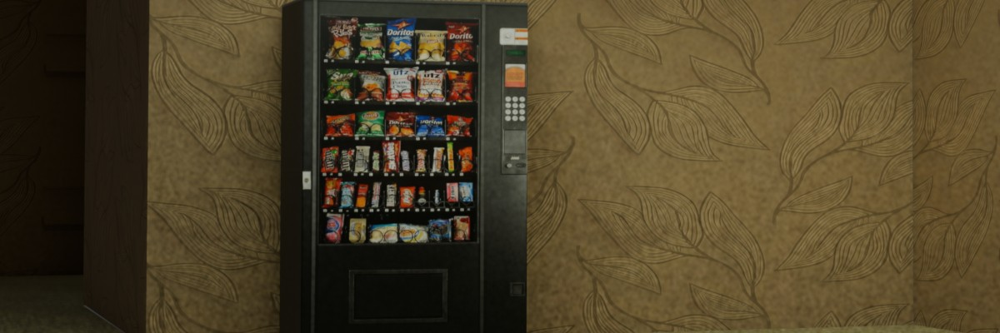

About My Practice

I am a graphic design student currently exploring the intersection of branding, typography, and web development. My work focuses on creating cohesive visual systems, from conceptual digital mockups to physical dielines and print layouts.
A successful design doesn't just look good; it communicates clearly. Whether I am developing a brand voice for a conceptual studio or structuring a web page, my goal is to guide the viewer's eye using deliberate contrast, alignment, and proximity.
Current Focus Areas
- Typography & Layout
- Pairing highly functional sans-serifs with expressive typefaces to create hierarchy and rhythm on the page.
- Brand Identity Systems
- Developing complete, immersive brand narratives, including recent concepts like the 'Syncopate' jazz lounge.
- Art History Context
- Drawing structural inspiration from historical movements, from Renaissance proportions to the surreal.